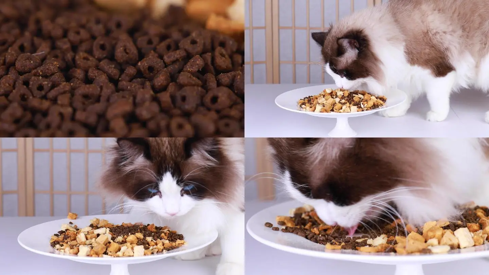

个人博客
Sign up
养布偶猫的乐趣与责任
与迷人的毛茸伴侣共度美好时光
布偶猫是一种温顺而迷人的宠物，它们以其柔软的毛发和独特的蓝色眼睛而受到喜爱。养布偶猫不仅是一种乐趣，也是一项责任。以下是一些养护布偶猫的重要提示。
1. 提供舒适的生活环境：
布偶猫需要一个安全舒适的家，提供柔软的床铺、适宜的温度和充足的空间供它们活动和休息。
2. 健康饮食：
给予布偶猫营养均衡的猫粮，并确保提供新鲜的水源。定期带它们去兽医那里检查，保持体重和健康状况。
2. 健康饮食：
给予布偶猫营养均衡的猫粮，并确保提供新鲜的水源。定期带它们去兽医那里检查，保持体重和健康状况。

3. 定期梳理：
布偶猫的长毛需要定期梳理，以防止毛球和打结。用专用的猫刷轻柔地梳理它们的毛发，保持它们的外观整洁。
4. 激发活力：
布偶猫喜欢玩耍，提供各种玩具和攀爬架，激发它们的活力和好奇心。
更多关于布偶猫的照片
请登录注册Sign Up